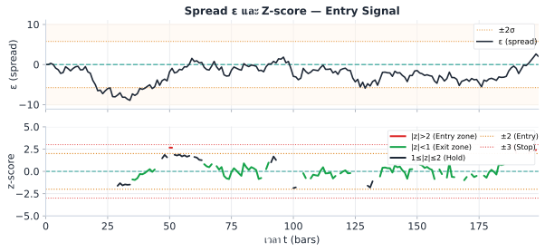
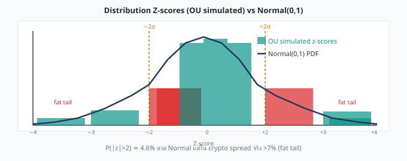

Hurst exponent ถูกพัฒนาขึ้นโดย Harold Hurst จากการศึกษาวัฏจักรน้ำท่วมแม่น้ำไนล์ ในทางการเงิน H วัดว่า series มี "ความจำ" หรือเปล่า — กล่าวคือการเคลื่อนไหวในอดีตมีอิทธิพลต่ออนาคตอย่างไร ด้านล่างแสดง time series สังเคราะห์สามแบบที่แสดงสามโหมดอย่างชัดเจน

ในการเทรดจริง ห้ามใช้ข้อมูลทั้งหมดตั้งแต่ต้น ในการคำนวณ με และ σε ให้ใช้ rolling window 30 วัน (≈ 720 บาร์รายชั่วโมงสำหรับ crypto perp) เพื่อให้ z-score ปรับตัวตาม regime ล่าสุด เช่น ถ้า funding rate เปลี่ยนเชิงโครงสร้าง ค่าเฉลี่ยของ spread จะดริฟต์ไป และ mean จากข้อมูลทั้งหมดจะหมดอายุภายในไม่กี่วัน Rolling window ช่วยให้ z-score วนรอบศูนย์อยู่เสมอ สำหรับคู่ที่ใช้บาร์ 5 นาที ใช้ window 7 วัน (2016 บาร์) ตรวจสอบโดยดูว่า |mean(z)| < 0.1 บนข้อมูล out-of-sample
Threshold ±2 ถูก calibrate ไว้บน Normal distribution ซึ่ง P(|z|>2) ≈ 4.6% แต่ในทางปฏิบัติ spread residual มี fat tail (leptokurtosis) — ความน่าจะเป็นที่จะเกิด event ขนาด 3σ สูงกว่าที่ Normal ทำนายถึง 2–5 เท่า ผลที่ตามมา: (1) entry threshold ±2 ถูก trigger บ่อยกว่าที่คิด — ทำให้ edge เจือจางลง และ (2) stop-loss ที่ ±3 เกิดบ่อยขึ้น — เพิ่ม tail risk แนวทางแก้: ใช้ robust z-score ที่ใช้ Median Absolute Deviation (MAD) เป็น denominator หรือขยาย entry เป็น ±2.5 หลังจากดู empirical exceedance rate จากประวัติ pair นั้นจริงๆ
เมื่อ H < 0.5 การเคลื่อนไหวในอดีตทำนาย ทิศตรงข้าม ในอนาคต — ถ้า spread ขึ้น 1 standard deviation ใน bar นี้ bar ถัดไปน่าจะลง นี่คือแรงที่เราใช้ประโยชน์เมื่อ enter ที่ ±2σ และรอ reversion ยิ่ง H ต่ำ แรง mean-reversion ยิ่งแข็ง edge ต่อ trade ยิ่งสูง
สัญชาตญาณ: R = range (สูงสุด − ต่ำสุดของ cumulative sum) วัดว่า series "แพร่กระจาย" ไปไกลแค่ไหน; S = std วัด volatility ตามปกติ อัตราส่วน R/S จึงบอกว่า series แพร่กระจายผิดปกติหรือเปล่า — random walk มี R/S ∝ √n แต่ mean-reverting series มี R/S เติบโตช้ากว่า slope H < 0.5 ในกราฟ log-log
วิธี Rescaled Range (R/S) คือ algorithm มาตรฐานในการ estimate H โดยวัดจากหลาย window size n:
Repeat for many window sizes n, then fit: log(R/S) = H · log(n) + C. The slope H is the Hurst exponent.

ADF และ KPSS มี null hypothesis ตรงกันข้าม การใช้ทั้งสองพร้อมกันให้คำตอบที่แน่นกว่าเรื่อง stationarity
| การทดสอบ | H₀ (สมมติฐานว่าง) | Reject H₀ หมายความว่า | เราต้องการ |
|---|---|---|---|
| ADF | Series ไม่ stationary (มี unit root) | Series IS stationary | p-value < 0.05 (reject) |
| KPSS | Series IS stationary | Series ไม่ stationary | p-value > 0.05 (fail to reject) |
| ผล ADF | ผล KPSS | ข้อสรุป | เทรดได้? |
|---|---|---|---|
| Reject (p < 0.05) | Fail to reject (p > 0.05) | Stationary แน่นหนา | ได้ |
| Reject (p < 0.05) | Reject (p < 0.05) | ขอบเขต / short memory | ระวัง ลด size |
| Fail to reject | Fail to reject (p > 0.05) | ไม่ชัดเจน — เก็บข้อมูลเพิ่ม / ขยาย window | ไม่ / รอก่อน |
| Fail to reject | Reject (p < 0.05) | ไม่ stationary ชัดเจน | ห้ามเด็ดขาด |
| ช่วง H | พฤติกรรม | การตัดสินใจเทรด | Half-Life โดยประมาณ |
|---|---|---|---|
| H < 0.35 | Mean-reverting แข็งมาก | เทรดได้เต็มที่ ใช้ band แคบลงได้ | สั้นมาก (ชั่วโมง) |
| 0.35 ≤ H < 0.45 | Mean-reverting ระดับปานกลาง | เทรดปกติ ใช้ band มาตรฐาน | สั้นถึงปานกลาง |
| 0.45 ≤ H < 0.55 | ใกล้ random walk — ไม่แน่นอน | ลด size ต้องการ ADF ยืนยัน | ยาวหรือไม่น่าเชื่อถือ |
| 0.55 ≤ H < 0.65 | มีแนวโน้ม (trending) เล็กน้อย | ห้ามเทรด mean-reversion | N/A (เทรด trend แทน) |
| H ≥ 0.65 | Trending แข็ง | ทิ้ง pair นี้ หาคู่ใหม่ | N/A |
H ไม่คงที่ตลอดไป pair ที่มี H = 0.33 เดือนที่แล้ว อาจเปลี่ยนเป็น H = 0.51 หลังเกิด structural break (นโยบาย exchange เปลี่ยน ค่า fee ปรับโครงสร้าง หรือ liquidity event ขนาดใหญ่) ควรคำนวณ H ใหม่บน rolling 90-day window เสมอ และแจ้งเตือนถ้า H ทะลุ 0.45
H = 0.31 กับ H = 0.35 อาจแยกไม่ออกทางสถิติ เพราะ R/S estimator มี noise โดยเฉพาะเมื่อ sample size น้อย การรายงาน H โดยไม่มี SE หรือ CI อาจทำให้ตัดสินใจ trade ผิด
Rule: CI ต้อง ทั้งหมดอยู่ต่ำกว่า 0.5 ถึงจะ trade ได้อย่างมั่นใจ ถ้า CI ทะลุ 0.5 ให้ลดขนาด position หรือรอ sample เพิ่ม
Spread residuals มี autocorrelation (นั่นคือ mean-reverting behavior ที่เราวัด H) — ถ้า resample แบบ i.i.d. (สุ่มแต่ละจุดแยกกัน) จะทำลาย autocorrelation structure ทำให้ SE ของ H ต่ำเกินจริง (overconfident CI)
Block bootstrap ขนาด √n รักษา local autocorrelation ไว้ → SE ที่ได้จริงกว่า
| H_point | SE (bootstrap) | 95% CI | CI ต่ำกว่า 0.5? | ตัดสินใจ |
|---|---|---|---|---|
| 0.31 | 0.03 | [0.25, 0.37] | ใช่ ✓ | Trade ได้ — confident |
| 0.43 | 0.04 | [0.35, 0.51] | ไม่ — CI ทะลุ 0.5 | ลด size 50%, re-test next month |
| 0.46 | 0.05 | [0.36, 0.56] | ไม่ — CI ทะลุ 0.5 | ไม่ trade จนกว่า H จะลง |
| 0.38 | 0.02 | [0.34, 0.42] | ใช่ ✓ | Trade ได้ — บาง SE → น่าเชื่อถือ |
คำนวณ H บน two series — spread ε และ ราคา BTC ดิบ — จาก 90 วันล่าสุดของข้อมูลรายชั่วโมง:
| Series | H (R/S) | Interpretation | ADF p-value | KPSS p-value | Verdict |
|---|---|---|---|---|---|
| Spread ε (Bybit − 1.003·Lighter) | 0.31 | Strongly mean-reverting | 0.0003 | 0.18 | Trade ✓ |
| Raw BTC log-price (Bybit) | 0.52 | Near random walk | 0.41 | 0.02 | Do not trade |
Spread มี H = 0.31 — อยู่ลึกใน mean-reverting territory ADF reject non-stationarity (p = 0.0003) และ KPSS fail to reject stationarity (p = 0.18) — นี่คือการยืนยันที่แข็งแกร่งที่สุดเท่าที่จะเป็นไปได้ ในทางตรงข้าม ราคา BTC ดิบแสดง H = 0.52 — ใกล้เคียง random walk สมบูรณ์แบบ ตรงกับที่ทฤษฎีทำนาย
คู่ใหม่ (Binance BTC Perp ↔ OKX BTC Perp) ให้ H = 0.43 จาก R/S analysis, ADF p = 0.032, KPSS p = 0.08
คำถาม: Spread นี้ mean-reverting ไหม? ควรใช้แนวทางเทรดแบบใด?
H = 0.43 < 0.5 → mean-reverting แต่ระดับปานกลาง อยู่ในช่วง "mean-reverting ปานกลาง" (0.35–0.45)
ADF p = 0.032 → reject non-stationarity (ดี) KPSS p = 0.08 → fail to reject stationarity (ดี) ทั้งสองการทดสอบเห็นพ้อง: spread stationary
การตัดสินใจ: เทรดได้ปกติแต่ใช้ band มาตรฐาน (ไม่ใช่ aggressive) ใช้ entry ±2σ ไม่ใช่ ±1.5σ ติดตาม H ทุกเดือน — ถ้าขึ้นเกิน 0.45 ให้ลด size Half-life อยู่ระดับปานกลาง (น่าจะ 12–48 ชั่วโมง) ควรถือหลายชั่วโมง
Spread ตัวหนึ่ง: ADF p = 0.08 (fail to reject), KPSS p = 0.03 (rejects stationarity)
คำถาม: แปลผลรวมนี้อย่างไร? ควรเทรด spread นี้ไหม?
ADF fail to reject (p = 0.08 > 0.05): หลักฐานไม่เพียงพอจะบอกว่า stationary ภายใต้ ADF
KPSS rejects (p = 0.03 < 0.05): KPSS ปฏิเสธ null ว่า series เป็น stationary อย่างชัดเจน
ข้อสรุปรวม: ทั้งสองการทดสอบเห็นตรงกันว่า series ไม่ stationary นี่คือผลลัพธ์แย่ที่สุด — หลักฐานชัดว่ามี unit root หรือพฤติกรรม trending ห้ามเทรด ให้กลับไป re-estimate β หรือหา pair ใหม่
สาเหตุที่เป็นไปได้: β ไม่ถูกต้อง (ใช้ recent window รัน OLS ใหม่), เกิด structural break ในความสัมพันธ์ของ pair หรือทั้งสอง asset แยกออกจากกันถาวร
Hurst exponent และ KPSS test ใช้สูตรเดิมกับทุก F(·) โดยไม่ต้องปรับ — ข้อควรระวัง: ε ที่สุ่มตัวอย่างความถี่สูง (funding spread ทุกชั่วโมง, IV ทุกนาที) มักมี microstructure noise มากกว่า log-price daily bar ทำให้ H และผล stationarity ประเมินคลาดเคลื่อนได้ง่ายกว่า (bid-ask bounce อาจดูเหมือน mean-reversion เทียม) ควรตรวจสอบด้วย synchronized mid-quote data เสมอ ไม่ใช่ last-trade ที่ไม่ sync กัน (ดู ch10B §10B.3)
บทที่ 6 Hurst Exponent & การทดสอบ Stationarity | ต่อไป → บทที่ 7: GARCH on Residuals